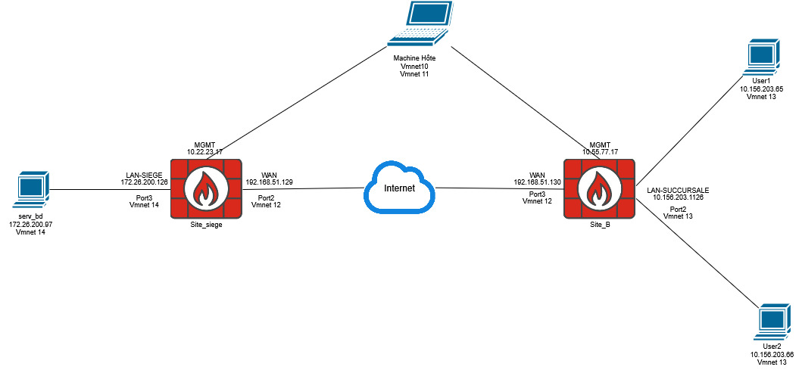
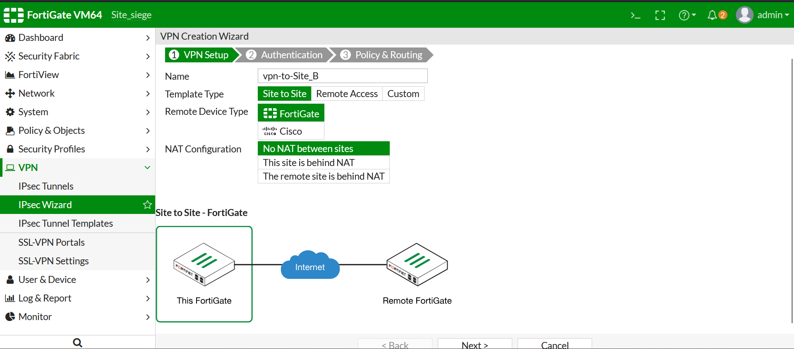
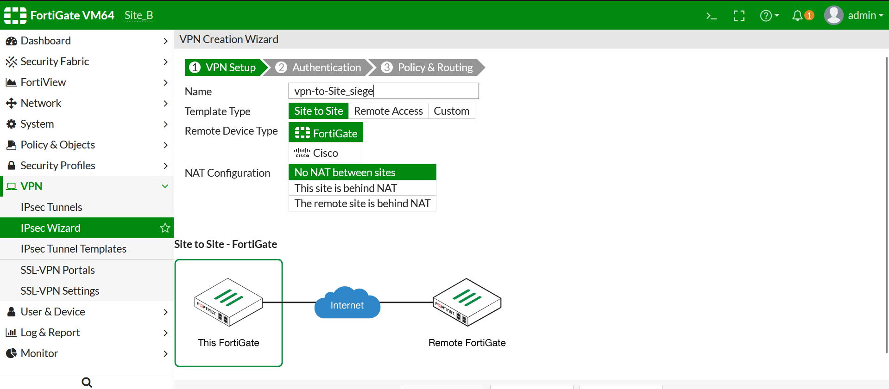
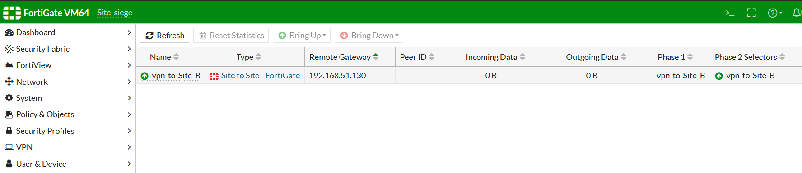
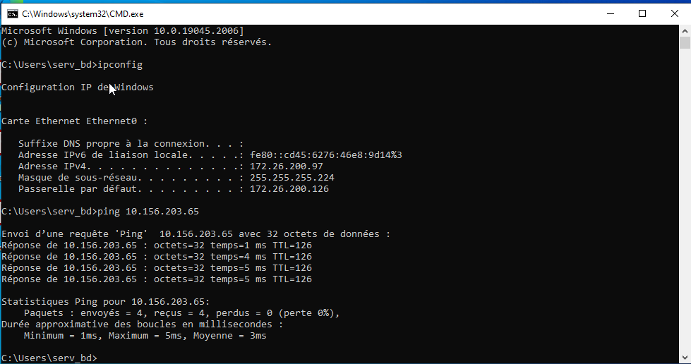
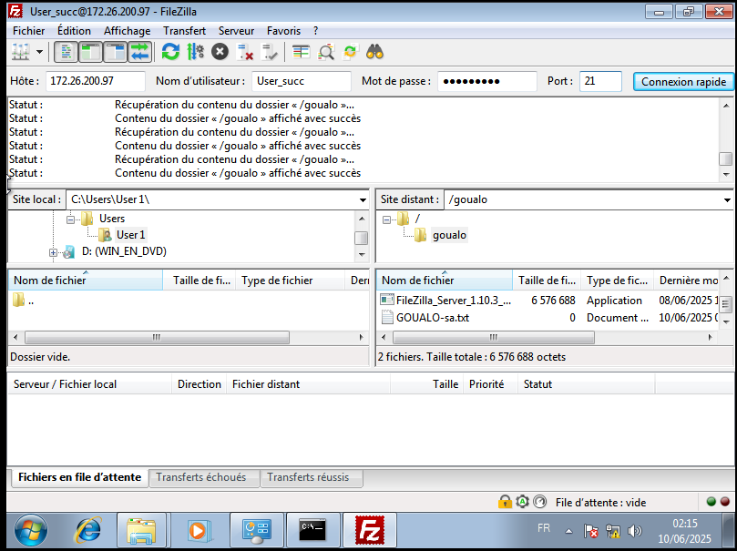

Contexte du lab
Le lab reproduit un besoin d'entreprise courant : permettre a une succursale d'acceder a des ressources situees au siege, sans exposer directement les services sur un reseau non maitrise.
WAN / FortiGate
Etude de cas autour d'une interconnexion securisee entre un site siege et une succursale, avec tunnel IPsec, politiques FortiGate, routage et validation applicative.
Le lab reproduit un besoin d'entreprise courant : permettre a une succursale d'acceder a des ressources situees au siege, sans exposer directement les services sur un reseau non maitrise.
Etude de cas
Cette topologie presente deux sites relies via un reseau WAN simule. Le site siege heberge le serveur FTP sur le reseau 172.26.200.96/27, tandis que la succursale contient les postes utilisateurs sur le reseau 10.156.203.64/26. Les deux pare-feux FortiGate assurent l'interconnexion et la securisation du trafic via IPsec.

La configuration cote siege definit les parametres IPsec, le pair distant, les reseaux locaux et distants, puis les regles necessaires pour transporter le trafic du LAN siege vers le LAN succursale.

Le deuxieme FortiGate reprend les parametres miroir : passerelle distante, reseau local de la succursale et reseau distant du siege. Cette symetrie est indispensable pour que la negociation IPsec aboutisse.

Cette capture confirme que le tunnel IPsec est etabli entre les deux FortiGate. La negociation des phases IPsec est fonctionnelle et les deux reseaux LAN peuvent désormais communiquer selon les politiques definies.

Le ping valide le routage entre les deux reseaux prives. Il prouve que les routes, les politiques FortiGate et le chiffrement IPsec permettent bien le passage du trafic entre les hôtes des deux sites.

Le test FTP valide le passage d'un trafic applicatif reel a travers le tunnel. Le poste utilisateur de la succursale accede au serveur FTP du siege, ce qui confirme que l'interconnexion n'est pas seulement theorique mais utilisable pour un service metier.

Le lab prouve la capacite a concevoir, configurer et valider une interconnexion IPsec exploitable : tunnel UP, communication reseau et service applicatif fonctionnel.